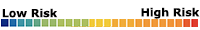

Select/ Deselect risk categories
and generate risk assessment.
and generate risk assessment.
Select All
Unselect All
Missouri County Risk Assessment
Risk Factors: {{map_title}}
Filter: {{this.filter1.display}} values between {{this.filter1.min_value}} and {{this.filter1.max_value}}

| Filtered by: |
|---|
|
Choose a filter:
"ERS Rural-Urban Continuum Codes distinguish metropolitan (metro) counties
by the population size of their metro area, and nonmetropolitan (nonmetro)
counties by degree of urbanization and adjacency to metro areas" (ERS Link)
|